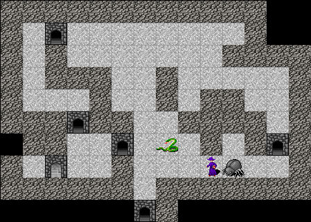

Haskell roguelike - Memory
Not so clever
The utility of wander to exit works well to find a door. The problem is once it finds the door, the actor is stuck there.
When the actor is standing on a door then it can’t see the door so it moves away. The following move it sees the door again and then moves back. Over and over
Memory
The actor’s need a way to remember things. This does not need to be too complicated but it should be able to
- Forget facts after some period
- Have independent buckets to store values in. E.g. each utility could store their own information
- Operations to recall facts, check if the actor remembers facts etc
The Memory type will do all of the above.
15_memory/src/Memory.hs (19 to 23)
import qualified Data.Map.Strict as Map
import Data.Map.Strict (Map)
-- | Store (remembers) values for a given period (measured by ticks)
newtype Memory a = Memory (Map Text (Map a Int)) - Memory is a map of “buckets”, where a bucket has a Text name
- Each bucket contains a remembered fact. This is stored as a map of fact to ticks remaining
The ticks remaining / ttl (time to live) is how facts are forgotten. When a fact’s ttl gets to zero it is forgotten.
Memory operations
Empty
15_memory/src/Memory.hs (28 to 29)
- Create a new empty memory instance
Remember
15_memory/src/Memory.hs (34 to 40)
remember :: (Ord a) => (Int -> Int -> Int) -> Text -> Int -> a -> Memory a -> Memory a
remember combineFn key ttl val (Memory m) =
Memory $ Map.alter ins key m
where
ins Nothing = Just $ Map.singleton val ttl
ins (Just vs) = Just $ Map.insertWith combineFn val ttl vs- Remember a new fact
- combineFn defines how existing keys are dealt with. Use
constto simply overwrite previous values - key is the bucket name
- ttl is the number of ticks the memory is retained for
- val is the value to store
- m is the previous memory instance
For example
import qualified Memory as M
m1 = M.empty
m2 = M.remember const "funFacts" 2 "remember me" m1
:t m2
# > m2 :: M.Memory TextRecall
15_memory/src/Memory.hs (45 to 47)
recall :: Text -> Memory a -> Map a Int
recall key (Memory m) =
fromMaybe Map.empty $ Map.lookup key m For example
import qualified Memory as M
m1 = M.empty
m2 = M.remember const "funFacts" 2 "remember me" m1
M.recall "funFacts" m2
# > fromList [("remember me",2)]Tick
15_memory/src/Memory.hs (71 to 82)
tick :: (Ord a) => Memory a -> Memory a
tick (Memory m) =
Memory $ tickBucket <$> m
where
tickBucket :: (Ord a) => Map a Int -> Map a Int
tickBucket vs =
foldr (Map.alter tickVal) vs (Map.keys vs)
tickVal :: Maybe Int -> Maybe Int
tickVal Nothing = Nothing
tickVal (Just i) = if i - 1 <= 0 then Nothing else Just (i - 1)- Call tickBucket for each bucket
- Fold tickVal over each value, calling Data.Map.Strict.alter
- Remove 1 from the ttl, if the result is zero/negative then delete it
For example
import qualified Memory as M
m1 = M.empty
m2 = M.remember const "funFacts" 2 "remember me" m1
M.recall "funFacts" m2
# > fromList [("remember me",2)]
m3 = M.tick m2
M.recall "funFacts" m3
# > fromList [("remember me",1)]
m4 = M.tick m3
M.recall "funFacts" m4
# > fromList []Adding actor memory
The actor gets a new property to store memories about positions
15_memory/src/GameCore.hs (56 to 57)
Moving
playerMoving is updated to send a tick to each actor on each run of the energy system.
15_memory/src/GameEngine.hs (734 to 742)
playerMoving :: Int -> World -> World -> World
playerMoving pendingCost pendingWorld oldWorld =
let playerAttemptedMoveWorld =
Right oldWorld
>>= checkIfNonMove
>>= checkIfPlayerHasMinEnergy
>>= runPendingIfPlayerHasEnergy
>>= runPlayerTick -- run the tick for the player, this is only run if the move was allowed
>>= stopIfPlayerCanStillMove15_memory/src/GameEngine.hs (777 to 778)
Wander to exit with memory
The wander to exit utility can now be made a bit smarter. As a simple improvement the actor will remember what doors they have visited and will ignore them for a period.
15_memory/src/UtilityBrain.hs (143 to 150)
utilityOfWanderToExit :: World -> Actor -> [PathTo] -> UtilAnnotator ([(Float, Actor, Impulse, Text, Maybe PathTo)], World)
utilityOfWanderToExit world' actor' allPaths = do
telld $ UeAt "WanderToExit"
-- If the actor is standing on a door, then add the door to the
-- list of doors to ignore
let keyAvoid = "wanderExit.avoid" -- key to access memory
let ttlAvoid = 200 -- memory will be retained for 200 ticks- keyAvoid is the name of the memory bucket
- ttlAvoid is the number of ticks to remember visited positions
15_memory/src/UtilityBrain.hs (153 to 163)
let (world, actor) = fromMaybe (world', actor') $
case Map.lookup (actor' ^. acWorldPos) (world' ^. wdMap) of
Nothing -> Nothing -- not standing on anything
Just e ->
if e ^. enType /= E.Door
then Nothing -- not standing on a door
else
-- Update the memory
let a = actor' & acPosMemory %~ M.remember const keyAvoid ttlAvoid (actor' ^. acWorldPos) in
-- Return the update world' and actor
Just (world' & wdActors %~ Map.insert (actor' ^. acId) a, a)- Check the current actor position
- If the actor is on an open door
- Update the actor’s memory and save the current position
- Return the updated world and actor
15_memory/src/UtilityBrain.hs (167 to 171)
-- Get the positions to avoid.
let avoid = M.recall keyAvoid $ actor ^. acPosMemory
telld . UeNote . show $ Map.keys avoid
-- Remove positions to avoid
let paths = removePathsToAvoid avoid allPaths- Recall what doors were previously visited
- Remove all the paths by calling removePathsToVisit
15_memory/src/UtilityBrain.hs (175 to 178)
-- Run the utility on the remaining paths
let rule x = clamp $ 1 - (0.04 * x + (1.24 - clamp (actor ^. acDisposition ^. dsWanderlustToExits)))
let clampedResults = moveTowardsUtil [E.Door] rule paths actor
pure ((\(p, score) -> (score, actor, ImpMoveTowards (path p), "wander to exit", Just p)) <$> clampedResults, world)- Filter any path that leads to a visited door
15_memory/src/UtilityBrain.hs (182 to 187)
where
removePathsToAvoid :: Map WorldPos Int -> [PathTo] -> [PathTo]
removePathsToAvoid avoid paths =
let isInAvoid p = Map.member p avoid in
let shouldInclude p = maybe True (not . isInAvoid) (lastMay p) in
filter (\p -> shouldInclude (pathPs . path $ p)) paths- Run the utility calculation
Fixed

Possible improvement
Once the actors have a memory there is a lot that can be done to make them smarter. For example
- Wanderlust: seek towards the longest path. Remember the target destination and keep moving in that direction until target is achieved.
- Infatuation: remember where the target of infatuation was. Aim towards that if the target moves out of fov. E.g. if it moves around a corner the utility can still move towards it.
Testing
The code example for this chapter has tests for some of the core code and for Memory. There is actually a fair amount of the engine that can be property tested. I’m not going to cover testing here but take a look at the code for some ideas.
Chapters
Changes
src/GameCore.hs
diff -w -B -a -d -u -b --new-file 14_utility_annotate/src/GameCore.hs 15_memory/src/GameCore.hs
--- 14_utility_annotate/src/GameCore.hs
+++ 15_memory/src/GameCore.hs
@@ -17,6 +17,7 @@
import Control.Lens.TH (makeLenses)
import Control.Monad.Writer.Strict (Writer)
+import qualified Memory as M
import qualified GameHost as Host
import qualified EntityType as E
import qualified BoundedInt as B
@@ -46,12 +45,17 @@
-- Note that the world is threaded through the utilities and can be updated (i.e. in the ([], World) result)
-- The array of results has an updated actor and a score. These are speculative, and are only applied
-- if that utility is selected. The world updates are kept even if nothing is selected
-
+ -- This is required because a utility may add a memory even if it can't move and that memory must be kept
+ -- until its TTL expires
, _acUtilities :: ![World -> Actor -> [PathTo] -> UtilAnnotator ([(Float, Actor, Impulse, Text, Maybe PathTo)], World)]
-
-- | The actor's disposition - the values that define the actors personality
, _acDisposition :: !Disposition
+
+
+ -- | The actor's memory about positions
+ , _acPosMemory :: !(M.Memory WorldPos)
+
}
data Player = Player { _plConn :: !Host.Connection
src/GameEngine.hs
diff -w -B -a -d -u -b --new-file 14_utility_annotate/src/GameEngine.hs 15_memory/src/GameEngine.hs
--- 14_utility_annotate/src/GameEngine.hs
+++ 15_memory/src/GameEngine.hs
@@ -24,6 +24,7 @@
import Control.Monad.Writer.Strict (runWriter)
import Control.Concurrent.STM (atomically, readTVar, newTVar, modifyTVar', TVar)
+import qualified Memory as M
import GameCore
import qualified GameHost as Host
import GameHost (conSendData, conReceiveText)
@@ -166,6 +167,7 @@
, _acEnergy = B.new 200 100
, _acUtilities = []
, _acDisposition = UB.emptyDisposition
+ , _acPosMemory = M.empty
}
mkEnemyActor aid e (x, y) =
@@ -182,6 +184,7 @@
, _acEnergy = B.new 180 100
, _acUtilities = []
, _acDisposition = UB.emptyDisposition
+ , _acPosMemory = M.empty
}
@@ -736,7 +738,9 @@
>>= checkIfNonMove
>>= checkIfPlayerHasMinEnergy
>>= runPendingIfPlayerHasEnergy
+ >>= runPlayerTick -- run the tick for the player, this is only run if the move was allowed
>>= stopIfPlayerCanStillMove
+
in
case playerAttemptedMoveWorld of
Left w -> w -- Left means stop
@@ -769,6 +773,11 @@
-- disallow
Left w
+
+ runPlayerTick w =
+ Right $ w & (wdPlayer . plActor) %~ actorTick
+
+
stopIfPlayerCanStillMove w =
let
a = w ^. wdPlayer ^. plActor
@@ -943,3 +948,8 @@
(\a g -> Map.insert (a ^. acWorldPos) (a ^. acEntity) g)
(w ^. wdMap)
(getAllActors w)
+
+
+actorTick :: Actor -> Actor
+actorTick a =
+ a & acPosMemory %~ M.tick
src/Memory.hs
diff -w -B -a -d -u -b --new-file 14_utility_annotate/src/Memory.hs 15_memory/src/Memory.hs
--- 14_utility_annotate/src/Memory.hs
+++ 15_memory/src/Memory.hs
@@ -0,0 +1,91 @@
+{-# LANGUAGE NoImplicitPrelude #-}
+
+
+module Memory ( Memory
+ , empty
+ , remember
+ , recall
+ , forget
+ , forgetAll
+ , remembers
+ , tick
+ , toList
+ , fromList
+ ) where
+
+
+import Protolude hiding (Map, empty, toList)
+
+import qualified Data.Map.Strict as Map
+import Data.Map.Strict (Map)
+
+-- | Store (remembers) values for a given period (measured by ticks)
+newtype Memory a = Memory (Map Text (Map a Int))
+
+
+
+
+empty :: Memory a
+empty = Memory Map.empty
+
+
+
+
+remember :: (Ord a) => (Int -> Int -> Int) -> Text -> Int -> a -> Memory a -> Memory a
+remember combineFn key ttl val (Memory m) =
+ Memory $ Map.alter ins key m
+
+ where
+ ins Nothing = Just $ Map.singleton val ttl
+ ins (Just vs) = Just $ Map.insertWith combineFn val ttl vs
+
+
+
+
+recall :: Text -> Memory a -> Map a Int
+recall key (Memory m) =
+ fromMaybe Map.empty $ Map.lookup key m
+
+
+
+forgetAll :: Text -> Memory a -> Memory a
+forgetAll key (Memory m) =
+ Memory $ Map.delete key m
+
+
+forget :: (Ord a) => Text -> a -> Memory a -> Memory a
+forget key val (Memory m) =
+ Memory $ Map.alter rm key m
+
+ where
+ rm Nothing = Nothing
+ rm (Just vs) = Just $ Map.delete val vs
+
+
+remembers :: (Ord a) => Text -> a -> Memory a -> Bool
+remembers key val m =
+ Map.member val (recall key m)
+
+
+
+tick :: (Ord a) => Memory a -> Memory a
+tick (Memory m) =
+ Memory $ tickBucket <$> m
+
+ where
+ tickBucket :: (Ord a) => Map a Int -> Map a Int
+ tickBucket vs =
+ foldr (Map.alter tickVal) vs (Map.keys vs)
+
+ tickVal :: Maybe Int -> Maybe Int
+ tickVal Nothing = Nothing
+ tickVal (Just i) = if i - 1 <= 0 then Nothing else Just (i - 1)
+
+
+
+toList :: Memory a -> [(Text, [(a, Int)])]
+toList (Memory m) = Map.toList $ Map.toList <$> m
+
+
+fromList :: (Ord a) => [(Text, [(a, Int)])] -> Memory a
+fromList vs = Memory . Map.fromList $ Map.fromList <<$>> vs
src/UtilityBrain.hs
diff -w -B -a -d -u -b --new-file 14_utility_annotate/src/UtilityBrain.hs 15_memory/src/UtilityBrain.hs
--- 14_utility_annotate/src/UtilityBrain.hs
+++ 15_memory/src/UtilityBrain.hs
@@ -13,6 +13,7 @@
) where
import Protolude
+import qualified Data.Map.Strict as Map
import qualified Data.List as Lst
import qualified Data.DList as DLst
import qualified System.Random as Rnd
@@ -20,6 +21,7 @@
import Control.Lens
import Control.Monad.Writer.Strict (tell, MonadWriter)
+import qualified Memory as M
import GameCore
import qualified EntityType as E
@@ -28,12 +29,14 @@
telld :: MonadWriter (DLst.DList a) m => a -> m ()
telld t = tell (DLst.singleton t)
-
path :: PathTo -> Path
path (PathToEntity p _ _) = p
path (PathToActor p _ _) = p
path (PathToPlayer p _ _) = p
+pathPs :: Path -> [WorldPos]
+pathPs (Path p) = p
+
selectTopUtility :: [(Float, Actor, Impulse, Text, Maybe PathTo)]
-> UtilAnnotator (Maybe (Float, Actor, Impulse, Text, Maybe PathTo))
selectTopUtility rs = do
@@ -138,16 +139,55 @@
pure ([(rule, actor, ImpMoveRandom, "wander", Nothing)], world)
+
utilityOfWanderToExit :: World -> Actor -> [PathTo] -> UtilAnnotator ([(Float, Actor, Impulse, Text, Maybe PathTo)], World)
-utilityOfWanderToExit world actor allPaths = do
+utilityOfWanderToExit world' actor' allPaths = do
telld $ UeAt "WanderToExit"
+ -- If the actor is standing on a door, then add the door to the
+ -- list of doors to ignore
+ let keyAvoid = "wanderExit.avoid" -- key to access memory
+ let ttlAvoid = 200 -- memory will be retained for 200 ticks
+
+
+ let (world, actor) = fromMaybe (world', actor') $
+ case Map.lookup (actor' ^. acWorldPos) (world' ^. wdMap) of
+ Nothing -> Nothing -- not standing on anything
+ Just e ->
+ if e ^. enType /= E.Door
+ then Nothing -- not standing on a door
+ else
+ -- Update the memory
+ let a = actor' & acPosMemory %~ M.remember const keyAvoid ttlAvoid (actor' ^. acWorldPos) in
+ -- Return the update world' and actor
+ Just (world' & wdActors %~ Map.insert (actor' ^. acId) a, a)
+
+
+
+ -- Get the positions to avoid.
+ let avoid = M.recall keyAvoid $ actor ^. acPosMemory
+ telld . UeNote . show $ Map.keys avoid
+ -- Remove positions to avoid
+ let paths = removePathsToAvoid avoid allPaths
+
+
+
+ -- Run the utility on the remaining paths
let rule x = clamp $ 1 - (0.04 * x + (1.24 - clamp (actor ^. acDisposition ^. dsWanderlustToExits)))
- let clampedResults = moveTowardsUtil [E.Door] rule allPaths actor
+ let clampedResults = moveTowardsUtil [E.Door] rule paths actor
pure ((\(p, score) -> (score, actor, ImpMoveTowards (path p), "wander to exit", Just p)) <$> clampedResults, world)
+ where
+ removePathsToAvoid :: Map WorldPos Int -> [PathTo] -> [PathTo]
+ removePathsToAvoid avoid paths =
+ let isInAvoid p = Map.member p avoid in
+ let shouldInclude p = maybe True (not . isInAvoid) (lastMay p) in
+ filter (\p -> shouldInclude (pathPs . path $ p)) paths
+
+
+
utilityOfInfatuation :: World -> Actor -> [PathTo] -> UtilAnnotator ([(Float, Actor, Impulse, Text, Maybe PathTo)], World)
utilityOfInfatuation world actor allPaths = do
telld . UeAt $ "Infatuation: " <> show (length allPaths) -- debugShowPathTos allPaths --show (actor ^. acDisposition ^. dsSmitten)